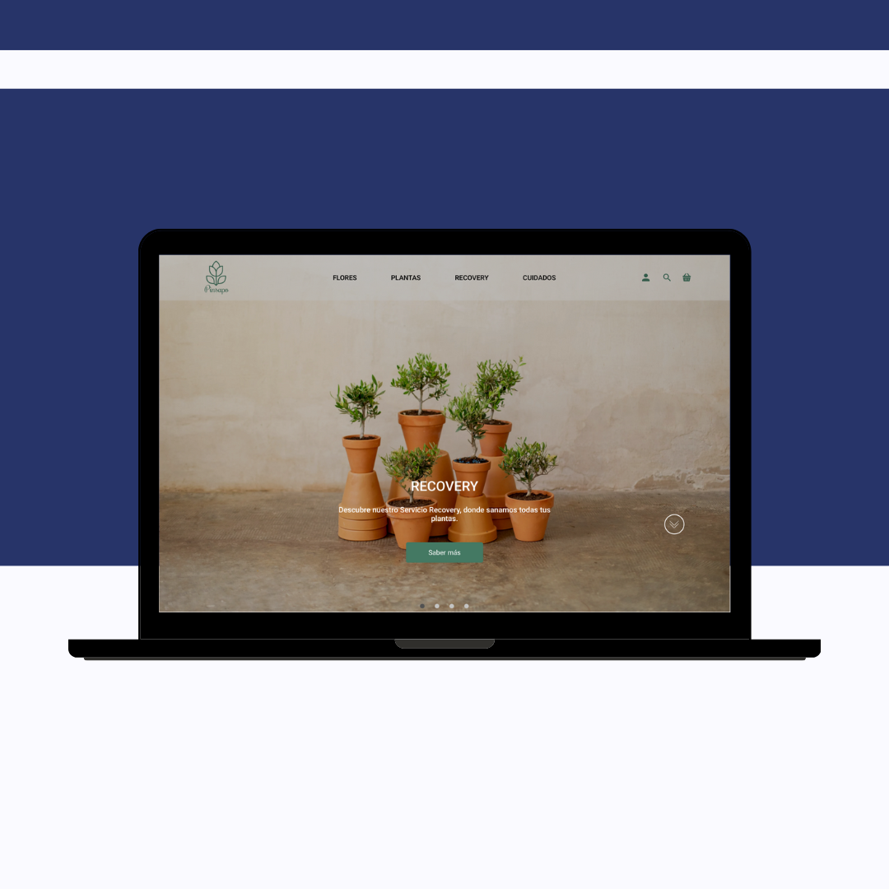
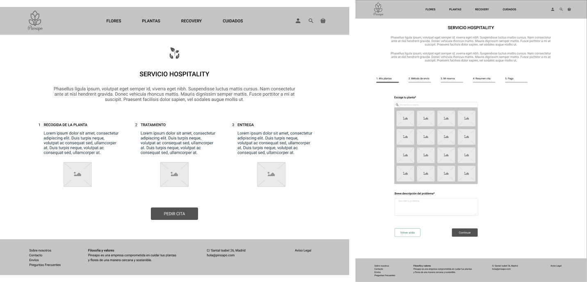

Ecommerce
Floristería Pinsapo
Objetivo del proyecto
Diseñar un sitio web o App para una empresa local. Para conseguir aumentar sus ventas o potenciar los servicios que ofrece, hacer todo más accesible a los usuarios.
Research
Hicimos una investigación sobre el consumo de flores y plantas, así como, benchmark de los competidores directos para ver qué servicios ofrecían, cómo los destacaban en su web y qué hace que se diferencien del resto. Ya que después de realizar este análisis competitivo nos dimos cuenta que existen varias floristerías online especializadas en servicios similares. Teníamos que centrar nuestro foco en un servicio que fuese útil para el usuario.
El problema
Tras realizar diferentes entrevistas y encuestas a consumidores, se detectó que el principal problema es que el 35% de 55 encuestados se les mueren las plantas por desconocimiento en sus cuidados. Se sienten frustrados a la hora de comprar o no una planta y se les muera, debido al dinero y tiempo invertidos en ella. Esto unido a una falta de información sobre los cuidados de las plantas.
Definición
Usuario
Una vez analizados todos los datos recabados en las encuestas y entrevistas pasamos a definir nuestro User persona.

A Victoria le gustan las plantas y suele acudir de manera ocasional a la floristería. Le gusta decorar su casa con flores y plantas para hacerlas más acogedora y bonita. Pero ella no es experta en el cuidado de plantas por lo que necesita tener una mayor información de cómo cuidarlas y tratarlas.
Solución - Propuesta de valor
Crear un servicio que ayude en la recuperación de las plantas, el Servicio Recovery, facilitando al usuario un mantenimiento de las mismas y ofreciendo, además, consejos de cuidados post ingreso.
Este fue el principal problema a solucionar, ya que detectamos que la gente no compraba plantas por miedo a que se le muriesen o no saber darle los cuidados adecuados.
User Journey
Encontrado el problema principal de nuestros usuarios y la solución. Ideamos el user journey hipotético para ver cómo sería el paso a paso y los diferentes estados por los que pasaría el usuario.

Ideación
Para organizar la web pasamos a realizar un crazy 8 para ver cómo sería la home de la floristería Pinsapo.

Al realizar este ejercicio, todos los miembros del equipo, coincidimos en que tenía que destacar el servicio Recovery ya que es nuestra propuesta de valor. Decidimos utilizar una banner en la cabecera de la home donde se mostraría primero el servicio Recovery y luego el resto de servicios que ofrece la floristería.
Pasamos a la segunda fase de prototipar, es decir, a los wireframes. En este momento del proyecto teníamos todos definido en cuanto a arquitectura de la información y qué era prioritario, para nosotros y para el resto de usuarios, que se viese en la home.

Así como el diseño del servicio Recovery
En base a estos wireframes, tuvimos que hacer cambios y ajustes para que el servicio de Recovery pudiese funcionar de una manera más eficiente. Nos surgieron dudas a la hora plantear la selección de la planta, ya que se daba la posibilidad de que el usuario no supusiese cuál es o sino la encontraba fácilmente entre las imágenes que se le mostraban.
Y finalmente llegamos Hi-Fi. Primero de todo, definimos el style tile, para definir colores, tipografías…

Esta sería la home de la floristería Pinsapo. Donde destaca el servicio Recovery, además de poder ver el resto de servicios que tienen como la venta de plantas y flores.

Para saber más sobre el servicio Recovery y en qué consiste se creó una página para explicar el servicio y donde poder pedir cita directamente para el tratamiento de las plantas.